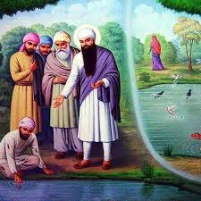

This Gurdwara is situated at a distance of 45 Km from Amritsar City in Patti City near Railway Station.
This Gurdwara is situated at the place where Bibi Rajni Ji used to reside with her parents and four sisters. Bibi Rajni Ji was a disciple of Fourth Sikh Guru, Shri Guru Ram Das Ji. Her Father named Rai Duni Chand was the revenue collector of Patti. One Day he asked his daughters, " Who provides you with food and shelter?" The elder four daughters immediately replied that their father provides them with everything. But youngest daughter Rajni replied that it is God who provides everything to everyone. Upon hearing this her Father married her to a leper. But Bibi Rajni had full faith in God and she alongwith her husband set out on a pilgrimage. Finally she reached Amritsar and went on to serve in the community kitchen of Guru Ram Das Ji and left her husband by the side of a Pond to take rest. Her husband saw a pair of Crows dipped down in the Pond and when they came out their colour had changed from black to white. So he decided to have a bath in the Pond. He dipped down in the Pond and came out as a healthy man. When his wife Bibi Rajni returned, she failed to recognize him. Her husband told her the complete story. Thereafter, both of them went to pay homage to Guru Ram Das Ji.
GURUDWARA SHRI CHAUBARA SAHIB is situated in City Patti Distt Tarn Taran. Sangat from Lahore side was bringing Dushale (Shawls) for SHRI GURU HARGOBIND SAHIB JI. But the Mughals had taken those forcefully. When Sangat reached Bhai Ki Daroli, they told GURU SAHIB whole story. GURU SAHIB said that now those Dushales belonged to him and he will himself get them back. GURU SAHIB appointed Bhai Bidi Chand Ji to bring back the dushales. Bhai Bidi Chand Ji reached Patti city. Patti in those days main trading center. Dressed as women Bhai Sahib reached Hakims residence and showed them few dushales he was carrying along with him. Hakims asked there ladies to show him the dushales which they had stolen from sangat to get them evaluated. When they showed the dushales Bhai Bidi Chand Ji took Dushales from them and ran away. This place was residence of Pattis Hakim.